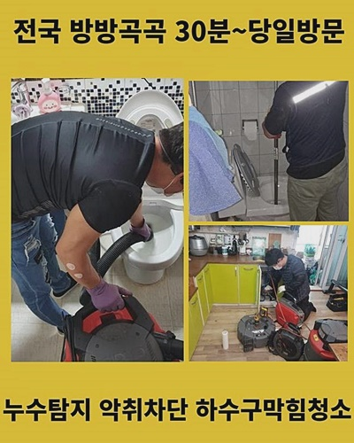
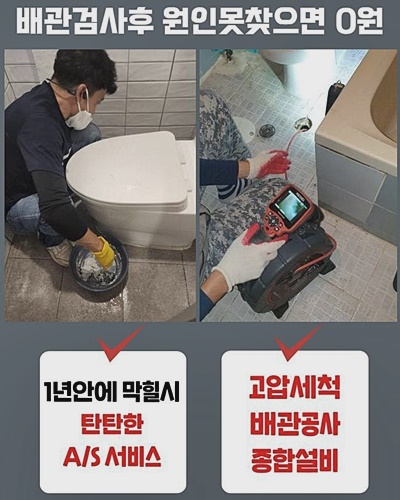
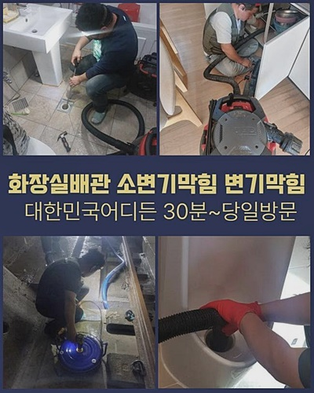
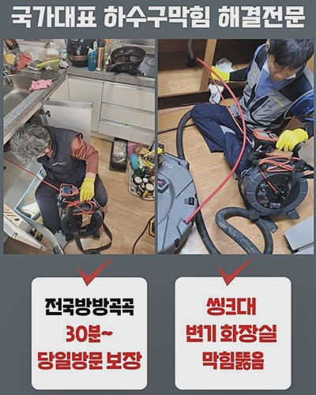
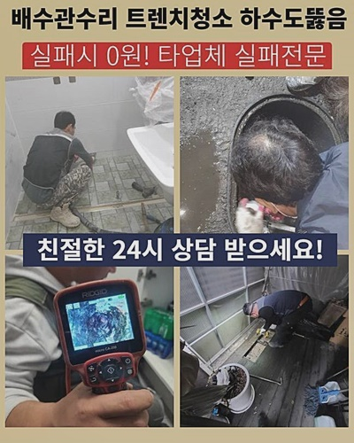
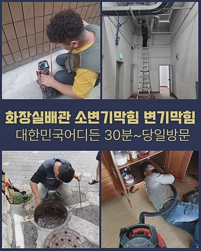
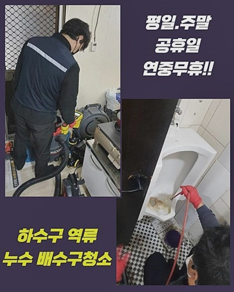

🏠 파주 동패동변기뚫음 군내면 냄새차단 해결방법
파주 변기막힘 전문 시공 후기

📋 작업 개요
- 위치: 파주
- 서비스 유형: 변기막힘, 하수구막힘, 배관막힘, 뚫는업체, 배관청소, 악취차단
- 작업 일시: 2024. 7. 23. 17:21
- 업체명: 하수구수사대 (010-5615-2118)
🔍 문제 상황
파주 동패동변기뚫음 군내면 냄새차단 해결방법
금일은 배수 장애가 있을때 수리업체 선정방법에 대해 소개해드리려구요
전문인 선정 시에 고려할요소는 전문가의 하수도막힘 변기 배수관막힘의 전문지식들과 노하우입니다
배수관의 문제점은 빠르고 확실한 대처가 필수적이니 전문적인 능력과 숙련된 전문인을 채택해야하죠
둘째는 가격과 정비조건들을 살피는것입니다
수리의 완성도와 비용은 중요요소지만 추가혜택들과 보증조건등을 감안하여 종합적인 가격을 체크하는 방법을 추천합니다
최종적으로는 먼저 이용한 고객의 리뷰들과 만족도를 확인해보는게 도움이됩니다
다른 이용자의 의견에 근거하여 전문가의 작업 퀄리티와 숙련도를 평가할 수 있기 때문에 이 방법으로 더나은 현명한 판단을 가능케합니다
그러므로 배수구막힘 현상이 발생했다면 최상의 하수관로막힘 화장실 배수로막힘 배테랑 전문가를 선정하려면 이런점들을 고려하여 선정하는 것이 바람직합니다
하수관로의 문제점을 살펴보고 관속을 분석하고 진행하는 동안 적절한 대응을 하여 문제를 처리하며 의뢰주신분의 고민해결을 위해 전력을 다할것입니다
우리업체의 수리절차들은 효과가 좋으며 많은 경력과 전문성으로 의뢰주신분의 어려움을 없애드릴 것을 선언합니다
오물이 상당량 쌓여있는 곳에는 강한수압으로 청소를 했고 썩션기구를 활용해 주요 방해물들을 제거하였습니다
그런다음 특화된장비들을 활용하여 침착물과 미세불순물들을 강한수압으로 씻어냈습니다
이런 과정을 통해 고장수리가 이뤄졌고 손상방지를 위해 규칙적인 클리닝이 요구됨을 알려드려요

🔎 원인 분석
💡 전문가 진단: 정밀 진단 장비를 사용하여 슬러지의 고착 여부를 판명하고 타격/세척 작업을 실시했습니다.
방관하면 더 심한 문제들이 생길수 있으므로 지속적인 관리가 핵심입니다
그래서 저희들은 일하는시각을 정해놓지 않고 밤낮없이 대응할 수 있도록 대비를 하고 있습니다
이번에 저희업체가 처리한 사례는 이른시간에 나타난 배수장애로 인해 욕실문을 열자마자 역한 냄새가 나고 있어 사안이 심각하다는 점을 직감했습니다
진행할때는 알맞은 힘으로 깨어내는 정비를 수행하여 찌꺼기들을 정교하게 갈고 석션기기를 이용해 세심하게 흡수하여야합니다
이런식으로 반복해서 오물 청소를 마친뒤엔 내시경장비를 배관속에 넣어 정확히 검사하게 됩니다
말끔해진 하수도 속 정비 내용을 의뢰인에게 공개하고
마지막으로 세면볼에 물을 꽉 채운 후 물배출 검사를 이용해 막힘없는 배수작용이 되는지 살펴봅니다
정밀한 조치를 통해 배관막힘 현상을 고쳤습니다
욕실 세면기에 배수구 고장이 발생하게 되면 일정에 불편함을 일으킬 수 있게됩니다
이런 경우에는 이유들을 분석하고 즉시 처리하여야 합니다 다만 이유를 밝혀내고 바로 잡는 것은 간단하지만은 않죠
그래서 배수관막힘 기술자의 도움이 필수적입니다
저희전문가들은 여러가지 기구와 장비들을 이용하여 불순물을 제거해드리고 하수관 청소작업을 수행했습니다
석션장비 굴착장치 청소도구들을 활용하여 불순물을 처리했으며 하수도 내부를 청소했습니다
첫째 수도꼭지를 틀어서 배수장애 현상들을 점검했고 자세히 문제를 분석했습니다

🔧 작업 과정
다른 전문가들이 방문하였으나 해결이 안되어 우리에게 의뢰를 요청했다 하는데
저희업체는 수리작업에 실패하게 되면 수리비를 청구하지 않는 방침을 운영하고 있기 때문에 염려하지 않으셔도 좋을 것입니다
순조롭게 해결한뒤에는 원하실 때 무비용으로 애프터서비스를 제공받도록 지원해드립니다
배수구 고장은 욕실 이용에 불편함을 주며 일상에 큰 불편을 유발하게 됩니다
그러므로 신속한 조치를 해야하며 하수배관막힘 화장실 배수로막힘 전문인의 도움이 필요합니다
저희들은 고객들의 불편함을 줄이고 원만하게 스케줄을 유지하게끔 많은정성을 기울이고 있어요
급하게 상담이 필요할땐 우리전문가에게 연락부탁드립니다
연중무휴 상담이 가능하며 주말에도 출장 또한 지원해드립니다
상쾌한 환경들을 만들어 나가려고 열심히 일하는 저희전문팀과 함께하셔서 불편함 없이 일상들을 누리시기 바랍니다
소변기 밑부분의 부속품을 제거하였더니 미세한 물때가 존재했으나 핵심 원인은 그리 간단하지 않았죠
그러므로 배수구 안쪽을 점검하려고 전문장비를 이용해 배관 내부를 조사했어요
확인결과 하수도 속안에 다량의 찌꺼기와 이물질들이 쌓여있으며 이런한 것들이 물흐름을 방해하는 주요한 원인이었죠
다음단계로 적합한 살균제나 세정제를 사용해 하수구를 깨끗하게 청소했습니다
이 방법으로 물빠짐이 확실히 작동되도록 처리했습니다
최종적으로는 의뢰인에게 하수관에 소량의 잔류물이나 이물질들이 모이지 않을 수 있게 주의할 점을 알려드렸죠
이 상황을 해결하고자 내시경장비를 활용해 하수관안쪽을 점검한결과 3m 부근에서 석회물질들이 강하게 붙어있는 모습을 발견하게 되었습니다
석회덩어리는 많은양의 찌꺼기들이 모이고 뭉쳐져 하수도를 봉쇄하는 요소로 관리를 안하면 배수가 원활이 안되거나 배수구고장을 일으키게 됩니다
그러니까 석회물질들을 없애려고 했고 실행을 위해서 샤프트 장치를 사용하게 되었습니다
이 기기를 이용해 석회물질들을 갈아내고 철저하게 제거해 하수관의 물빠짐을
이 작업으로 석회덩어리를 없앰으로써 하수배관막힘 현장의 근본적인 이유들을 고치게 되었습니다
어떤 현상들이 발생한 원인을 알아내지 않는다면 문제해결을 할 수가 없기에 신속하게 사태를 이해할 수 있도록 애썼습니다
변기를 분리하여 배수구에 내시경장비를 투입하였더니 배수장애의 요인을 찾게되었어요


✅ 작업 완료
일전에도 노력했었지만 풀리지 않은 오물 축적으로 인해 배수가 원활하지 않았습니다
이걸 제거하려고 힘썼으며 의뢰자에게 내시경장치로 문제를 보여주고 안내드렸습니다
문제들의 요인을 찾기위해 전력을 다해 힘썼고 어째서 이런일이 일어났는지 이해했습니다
이같은 현상들을 예방하고자 하면 종종 하수구 점검과 청소가 중요하다는 것을 설명해드렸습니다
기분좋은 하수도막힘 욕실 배수설비막힘 수리지원을 할 수 있도록 열심히 노력할 것을 약속드립니다
위와 같은 혜택들을 지원하는 전문업체를 결정하는게 최선입니다




⚠️ 하수구 배관 막힘 예방 및 관리 가이드
- ✅ 머리카락, 비닐, 물티슈 등 물에 분해되지 않는 이물질은 하수구 유입을 절대 금지해 주세요.
- ✅ 하수구 거름망을 씌우고 모여진 이물질은 주기적으로 쓰레기통에 바로 비워주셔야 합니다.
- ✅ 배관 노후가 심할 경우 이물질이 더 쉽게 걸리므로 주기적인 배관 세척(고압세척 등)을 권장합니다.
- ✅ 작업 후 1년 이내 재발 시 하수구수사대에서 무상 A/S 보증 서비스를 제공합니다.
💡 핵심 정리
- 확실한 장비 작업(내시경 점검 및 샤프트 스케일링)으로 원인을 뿌리 뽑습니다.
- 작업 후 1년 이내에 동일한 부위 재발 시 100% 무상 A/S 서비스를 보장합니다.
- 서울 · 경기 · 인천 전 지역에 24시간 언제든 긴급 출동할 수 있도록 항시 대기 중입니다.
❓ 자주 묻는 질문 (FAQ)
🚨 파주 변기막힘 문제로 고민이신가요?
정확한 원인 진단과 확실한 시공으로 재발 없는 해결을 약속드립니다.
24시간 긴급 출동 | 서울 · 경기 · 인천 전지역 | 1년 내 재발 시 무상 A/S